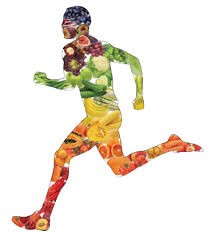
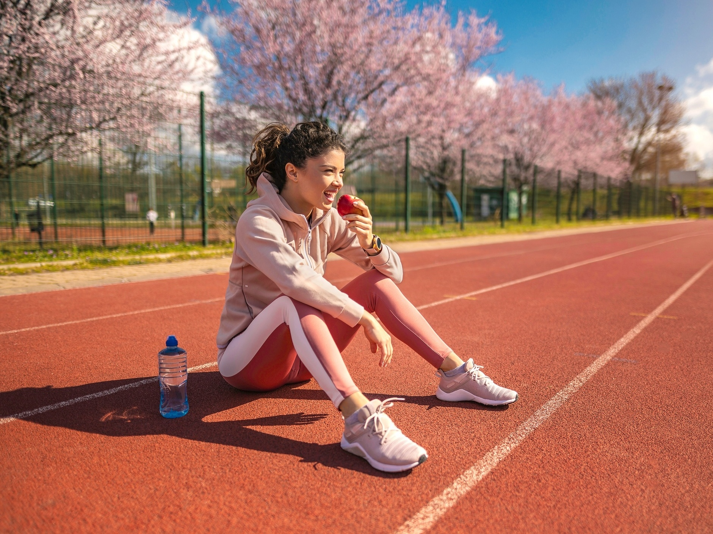

Alimentação na corrida:Guia completo para corredores
A alimentação é um dos pilares mais importantes para quem pratica corrida. Ela influencia diretamente na energia, no desempenho e na recuperação muscular. Planejar o que comer antes, durante e depois dos treinos ou provas faz toda a diferença no rendimento.
Alimentação Antes da Corrida
O objetivo principal da refeição pré-corrida é garantir energia suficiente, evitar desconfortos gastrointestinais e preparar o corpo para o esforço físico.
3 a 4 horas antes:
- Priorizar carboidratos complexos, que liberam energia de forma gradual.
- Baixo teor de gorduras e fibras, para não atrapalhar a digestão.
- Quantidade moderada de proteína.
Exemplos de refeições:
Arroz, frango grelhado e legumes cozidos,Macarrão com molho leve (sem muita gordura),Batata-doce com ovo mexido.
30 a 60 minutos antes:
- Optar por carboidratos simples, de fácil digestão, que fornecem energia rápida.
- Evitar alimentos pesados.
Exemplos de lanches rápidos:
Banana ou maçã,Pão branco com geleia ou mel,Barrinha de cereal simples.

Alimentação Durante a Corrida
Indicada principalmente para corridas com duração superior a 1 hora (meia maratona, maratona ou treinos longos).
Hidratação:
- Beber água a cada 15-20 minutos.
- Em dias quentes ou corridas longas, incluir isotônicos para repor sais minerais como sódio e potássio.
Energia extra:
- Géis de carboidrato: recomendados a cada 40-50 minutos de prova.
Alternativas naturais:
- Banana
- Uva-passa
- Tâmaras
- Mel em sachê
Evitar alimentos pesados ou fibrosos, que dificultam a digestão.

Alimentação Depois da Corrida
O foco da refeição pós-corrida é recuperar energia, reparar os músculos e hidratar o organismo.
Até 30 minutos após o treino:
Combinar carboidratos + proteínas para otimizar a recuperação.
Exemplos:
Leite com achocolatado
Iogurte natural com frutas
Pão integral com peito de peru ou atum
1 a 2 horas depois:
Fazer uma refeição completa, equilibrada e nutritiva.
Sugestões:
Arroz, feijão, carne magra e salada
Quinoa com frango grelhado e legumes
Massa integral com molho de tomate e atum